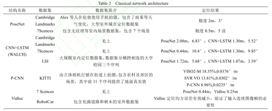

论文笔记5-视觉slam的研究现状与展望
1. 基本信息
吴凡, 宗艳桃, & 汤霞清. (2019). 视觉slam的研究现状与展望. 计算机应用研究, 37(8), 1–9. https://doi.org/10.19734/j.issn.1001-3695.2019.02.0035
2. 传统方法
经典的单目SLAM做帧间姿态估计的时候主要使用三种方法：
- 特征点法（ORB）
- 光流法
- 直接法（LSD， DSO）
其中光流法也是通过追踪光流的方法来辅助进行特征点跟踪的，使得相近帧之间的特征点不在需要提取和匹配，而是直接使用光流跟踪计算得到。
特征点法还是主流，算法主要取决于特征点的提取的效率和准确性。
光流法更多是一种辅助方法。
直接法虽然能够利用全图信息，得到更密集的点云，但是对于光照变化敏感。
3.深度学习
而随着深度学习的崛起，很多端到端的方法能够直接根据图像学习得到两幅图像间的位姿变换，包括监督类的方法PoseNet，DeepVO，P-CNN VO以及非监督方法UnDeepVO等，通过学习，能够直接数据位姿向量或者射影矩阵。
算法精度如下图所示，作者归纳深度学习方法应用于帧间估计的发展过程：“帧间估计问题归纳为回归问题得以重视，最开始通过单纯的卷积神经网络得出相机的位置与姿态，在发展过程中还加入了光流、特征点等特征向量提高回归的精度。后来，将卷积神经网络结构转换为循环卷积神经网络结构，加入了时间依赖性，对帧间估计问题适用性非常强，大大地提升了帧间估计的位置和旋转精度，甚至超越了一些经典的单目帧间估计方法。”，但总体来看，“其算法得到的精度和经典的闭环视觉SLAM算法还有距离，这使得基于深度学习的SLAM算法还难以进行工程应用”
另一边，对于多传感器融合也开始有深度学习将VO和惯导的融合，包括传统的卡尔曼滤波以及VINet。

4. 未来发展
最后未来SLAM应该更加向语义、多传感器融合和动态场景SLAM发展，而深度学习则应该更加精准的对SLAM中的一个或几个模块进行优化，如BA，闭环检测等。